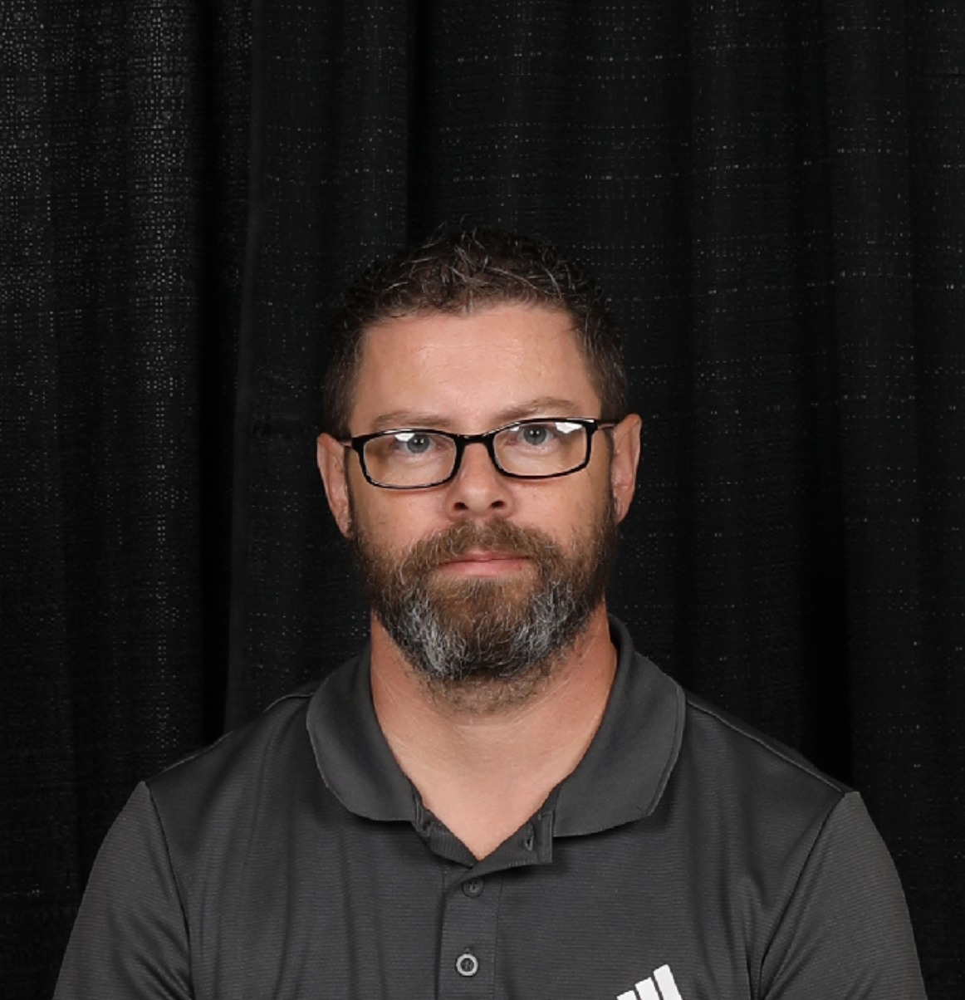

Adam Minnick's Resume

Career Objective
Aspiring web designer looking to join a team as an entry-level web designer.
Education
- Indiana University - Bachelor of Fine Arts Graphic Design - Graduated 2009
- University of North Alabama - Bachelor of Arts Business Administration - Graduated 2019
Work Experience
- Home Inspector 2023-2026
- Use marketing and sales skills to sell my home inspection services.
- Perform thorough home inspections detailing every aspect of the buyers home.
- Deliver completed home inspection reports to clients quickly and accurately.
- Security Officer 2024-Present
- Protection and customer service for patients, visitors and staff.
- Armed security qualified.
- CPR qualified
- Advanced security officer qualified.
- Aldi 20216-2023
- Perfected customer service skills being around customers all day.
- Promoted to supervisor and given more responsibily.
- Went above and beyond making sure everything was stocked and clean looking.
- Navy 2009-2015
- Qualified as an Air Warfare operator.
- Qualified as an Airframe Mechanic.
- Promoted quickly due to excellent work habits and motivation.
- Honorably discharged after 6 years of service.
Skills
- Html coding
- CSS Coding
- Javascript
- Node
- React
- PostgreSQL
- Web3 and DApps
- CPR Qualified
- Adobe Creative Suite
- Marketing
- Sales
- Photography/videography
- Graphic Design
Hobbies
Contact Me